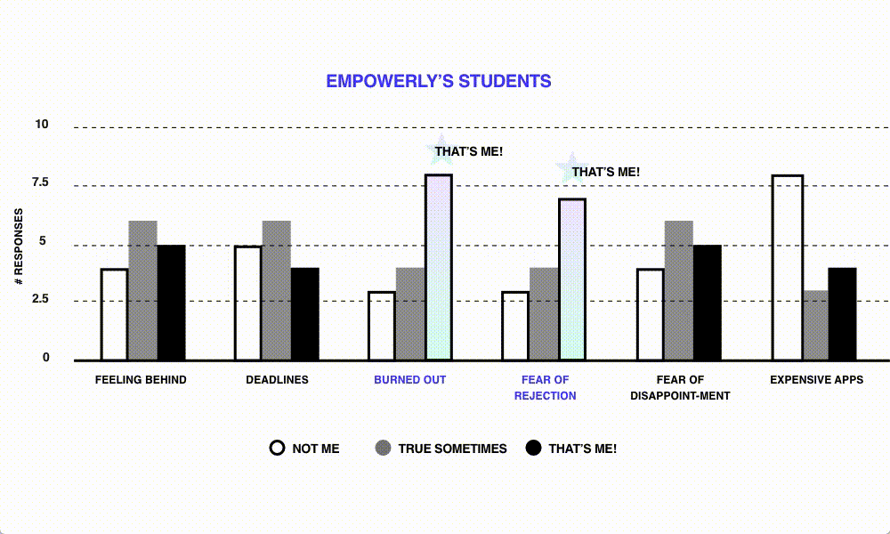
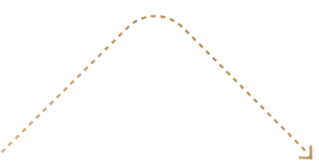
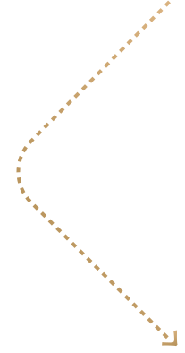
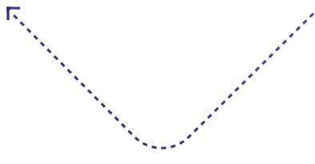
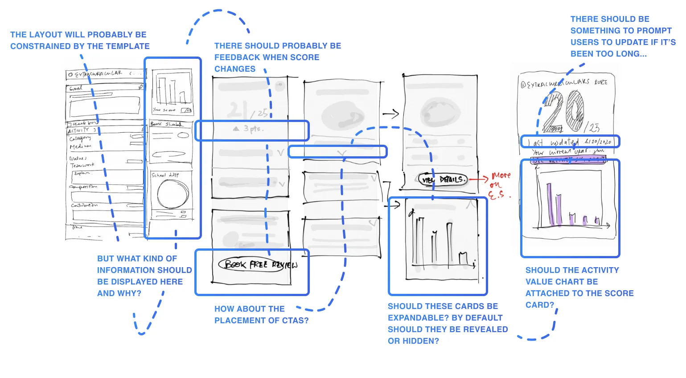
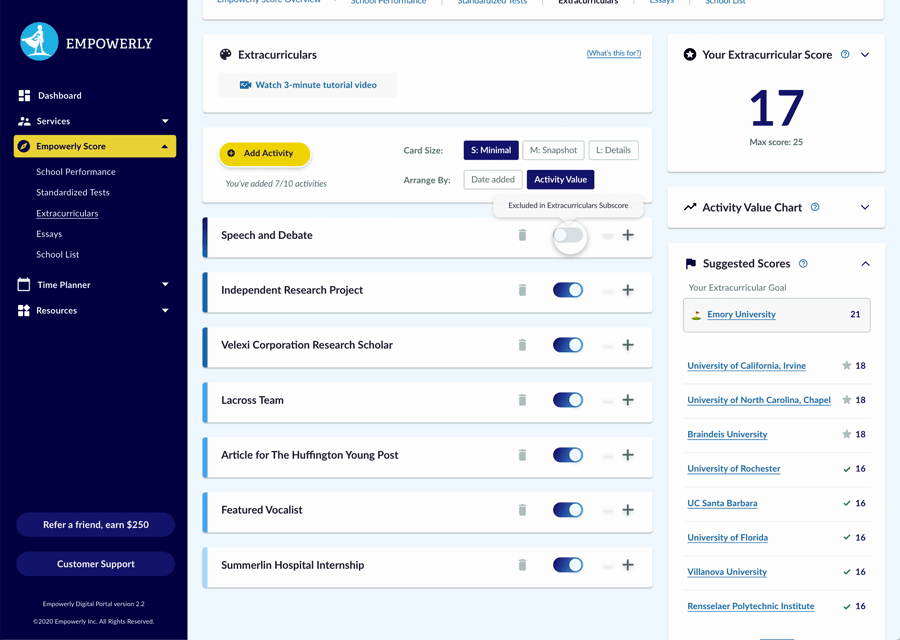

Due to extreme competition and admissions uncertainties, high-achieving students write 12-20 college essays and submit 20-30 college applications, leading to extreme burn-out.
Empowerly was unable to track their students’ progress in the portal due to lack of engagement with the digital portal. On the other hand, not all counselors had equal experience in college admissions and were able provide the same level advice, since some were more geared towards industry mentorship.
The student portal was suffering from feature bloating without a central focus. There were some resource directories, calendars and to-do list tools but it didn’t give students or counselors a strong reason to ever log in.
While there are many college apps “chancing calculators” out there, the Empowerly Score is unique in the following ways:
A score that measures the college application strength of a candidate.
Takes into account the “intangible qualities” found in extracurriculars and essays.
Helps students focus their time and energy on what matters the most.
If you are concerned about how such a feature might have an impact on a minor’s mental health, you are not alone. Mental health became a huge consideration, and it was therefore really important that we build in mechanisms that provided reassurance as well as trustworthy and actionable feedback.
By showing students where they could improve and what their strengths are, as well as which colleges they were an ideal candidate for at any given time, they could determine how best to spend their time and feel less stressed.
The Empowerly Score gamifies the college application process, and encourages students and counselors to log all their information in one place for tracking purposes. It also informs all counselors on how college admissions work and gives them a level playing field.
The Empowerly Score helps ties all the disparate functionalities of the portal (essay edit, research requests, goal-setting etc.) together to address one common user goal — getting a predictive score.
Having collected 100 survey responses, I observed that Empowerly students have a very different persona from general US students, in that they are much more burned out.
Realizing how different the two types of high school students are, we decided focus on serving the needs of our current Empowerly students first (since we knew them better), instead of rushing to expand the market.
After interviewing 10+ Empowerly counselors and students, we've learned that to students and their families, the value of counselors is their purported ability to shed light on the admissions process. Yet even with Empowerly’s counselors, students were still over-applying to schools due to sense of insecurity. Many were submitting 10-20 applications.

The average american student mostly claimed to experience a low level of ”fear of rejection”, whereas Empowerly’s students, who are mostly hyper competitive, reported a great ”fear of rejection” and were most burnt out.
From researching competitive projects (colloquially referred to as “college admissions chancing calculators”), I noticed this: even if a product has the most beautiful interface, users will quickly abandon it if they find the results unreliable or downright meaningless.
In other words, for the Empowerly Score needs to be transparent, reliable, and accurate.
Since the accuracy of the Empowerly Score results is so critical, we decided to make sure we got the algorithm right first before moving on to the interaction and visual design.
The following diagram shows the different stages of the design and development process. At each stage, we delivered an output — whether that be an algorithm, a prototype, or a final product, and then tested them with users with the specific questions in mind. If the answer was "no," then we would move back a step and iterate. If we were satisfied with the outcomes, then we would move forward.



Prior to designing the hi-fi wireframes, I led efforts in:
Designing the algorithm on a spreadsheet by guiding counselor input;
Handing the spreadsheet off to engineers to build a live data prototype;
Using the live data prototype in real-life scenarios to gauge authentic user reactions;
Validating the product idea and iterate on the algorithm.
Based on my research, I helped build a series of formulas on Excel that computed the Empowerly Score. I used this spreadsheet in a series of usability tests to validate the usefulness of the score before moving further with the design.
During live-data prototype testing, students who retrieved a score gave it a usefulness rating of 90%. However, seeing the actual number of the Empowerly Score was stressful to them as it is very honest about their current standing.
— Kelli (Sophomore)
90% of students who tested the Empowerly Score believed that knowing more about how the Score was composed, as well as what they needed to do to improve could help alleviate stress. In other words, the design of the interactions and the interface should be consistently intuitive, informative, and instructional.

Working on a spreadsheet made us realize that it was useful seeing all the school's data at a glance as it revealed interesting patterns. For example: which top 20 school has a relatively lower requirement for extracurriculars strength compared with others with similar reputation? We were also able to see in real number terms — as we moved down in the school rankings — how the importance of extracurriculars and essays reduce drastically relative to academic requirements like SATs and test scores. This was revealing, because previously no one had tried to give activities and admissions essays a quantifiable value.
As the data revealed unique insights, they continued to feed us ideas on how to build an interface that such information accessible for student users.
Jessie is stressed out by the competition and is always worried that she is not doing enough.
The “Suggested Scores” panel displays a list of schools that are already within Jessie’s reach to give her a sense of reassurance.

Jessie feels overworked but doesn’t know which activities are worth giving up and how to make the most of her activities.
The Extracurriculars page allows Jessie to arrange activities by Activity Value so that she can optimize her efforts. Conveniently, this is the order in which she should be listing them in her Common Apps—starting with the one that is weighted as the most significant.
Soon after the Empowerly Score was lauched, the company was able to secure $1.6 million in seed funds (and eventually Series A). Media attributed the innovation of the Empowerly Score as one of the critical contributing factors.
If design is the act of making a series of human-centric decisions, there was plenty of room for creativity in building the algorithm.
Make it a point to test user reaction by demonstrating the value they will receive in a personal and tangible way. In this case, it’s the generated Score first and foremost.
Sure, sometimes it does. In some cases, however, minor UX copy or UI placement changes may have little impact on engineering time while contributing to significant business gains.
— Hanmei Wu, Co-Founder at Empowerly
— Rashi Jindani, COO at Empowerly
— Sheelah Bearfoot, Community Manager at Empowerly


Made in Figma + Webflow by Lai Jing Chu, 2025.
Take a peek at the website style guide.